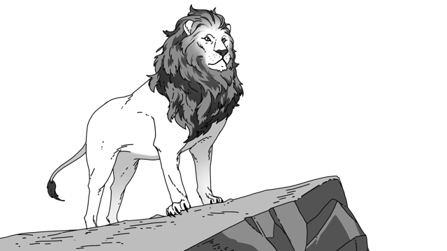

- HTML
- CSS
- JavaScript
- Web history
h1은 가장 큰 제목태그
제목태그 h1,h2,h3,h4,h5,h6 html작성 시 글꼴, 글자 크기 등을 정해놓지 않으면 브라우저의 기본 글꼴과 크기로 표시
h2두번째 제목태그(1번보다 작음)
많이 사용하는 태그 28개
html,head,body,title,meta,div,a,script,link,img,span,p,li,ul,style,br,h1,h2,input,form,h3,iframe,nav,strong,footer,header,button,i
br태그는 닫지않는다
단락을 표현할때는 줄바꿈 태그 보다는 단락을 표현하는 p태그가 효과적P
그 이유는 단락에 단락 태그를 사용하는 것이 정보로서 보다 가치있음P
br태그는 줄바꿈만을 의미할 뿐br
p태그의 단점으로는 단락과 단락의 간격이 고정되어 있어 시각적 자유도 저하br
반면 br의 경우 쓰는만큼 줄바꿈이 되기 때문에 원하는 만큼 간격을 줄수 있음br2
그러나 웹의 css기술을 활용하여 p의 한계를 극복가능br
HTML은 정보를 표현, CSS는 정보를 꾸밈P
p style태그의 디자인을 자유롭게 변경할 수 있기 때문에 br보다 p태그를 사용하는것이 더 좋은 선택이다.
목차는 list줄여서 li태그를 사용한다
li태그를 구분지어주는 ul태그(unorder list)와 ol태그(ordered list) ol은 숫자로 내용 정렬
meta charset="utf-8" 코드를 이용해서 utf-8로 만들어진 웹페이지를 연다
title태그를 이용해 제목 지정
태그의 제왕 a태그
- href속성의 값에는 웹페이지, 이미지, 동영상, 파일 등의 주소를 넣는다
- target 속성은 링크를 어디에서 열지 정한다
_self : 기본값으로 현재 페이지에서 링크 처리
_blank : 새 창 또는 새 탭에서 링크 처리
_parent, _top : 웹페이지를 framest으로 구성했을때 사용
- Naver
